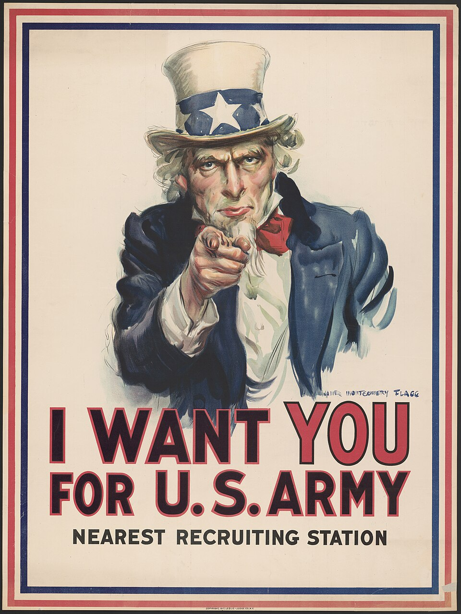
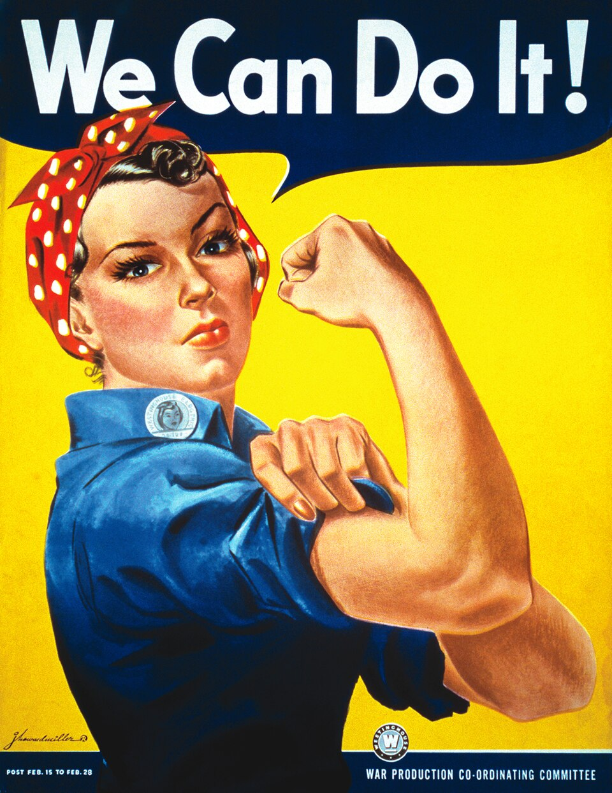

คำชี้แจง อ่านใบความรู้หน่วยที่ 7 ก่อน แล้วทำทุกตอน
เติมเหตุการณ์ในช่องว่างให้เป็นลำดับเหตุและผลที่ถูกต้อง
| 1 | ระบบพันธมิตร ลัทธิทหารนิยม จักรวรรดินิยม ชาตินิยม |
| 2 | ชนวน: |
| 3 | สงครามโลกครั้งที่ 1 (ค.ศ. 1914–1918) |
| 4 | สนธิสัญญา: |
| 5 | ผลต่อเยอรมนี: |
| 6 | เศรษฐกิจโลก (ค.ศ. 1929): |
| 7 | ผู้นำที่ขึ้นสู่อำนาจ: |
| 8 | ชนวนสงครามโลกครั้งที่ 2 (ค.ศ. 1939): |
| 9 | องค์การที่ตั้งขึ้นหลังสงคราม (ค.ศ. 1945): |
จุดเชื่อมโยงใดในผังนี้ที่นักเรียนคิดว่าสำคัญที่สุด ถ้าเปลี่ยนจุดนั้นได้ สงครามโลกครั้งที่ 2 อาจไม่เกิดขึ้น เพราะอะไร


| คำถาม | ภาพ ก | ภาพ ข |
|---|---|---|
| โปสเตอร์ต้องการให้ผู้ชมทำอะไร | ||
| ใช้เทคนิคอะไรโน้มน้าวใจ (สายตา สี ท่าทาง ข้อความ) | ||
| กลุ่มเป้าหมายคือใคร |
ปัจจุบันเรายังพบ “การโฆษณาชวนเชื่อ” ในรูปแบบใดบ้าง และนักเรียนจะตรวจสอบได้อย่างไรว่าเป็นข้อมูลจริงหรือไม่
| สงครามโลกครั้งที่ 1 | สงครามโลกครั้งที่ 2 | |
|---|---|---|
| ไทยอยู่ฝ่ายใด / ทำอะไร | ||
| ผลที่ไทยได้รับ |
“สันติภาพที่ไม่เป็นธรรม อาจกลายเป็นต้นเหตุของสงครามครั้งต่อไป” นักเรียนเห็นด้วยหรือไม่ ใช้สนธิสัญญาแวร์ซายประกอบคำอธิบาย
ภาพโปสเตอร์ทั้งสองเป็นสาธารณสมบัติ จาก Wikimedia Commons